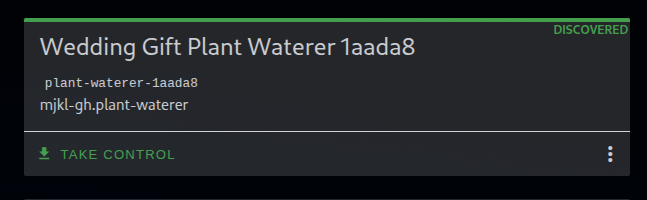

Firmware aanpassen
Als je uitgekeken bent op de firmware die ik voor je gemaakt heb kan je deze aanpassen. Hier zijn meerdere mogelijkheden voor.
De firmware wordt gecompileerd door ESPHome op basis van een yaml configuratie bestand. In het geval van mijn firmware bestaat de configuratie uit
substitutions:
name: plant-waterer
friendly_name: Wedding Gift Plant Waterer
esphome:
name: "${name}"
friendly_name: "${friendly_name}"
# Use this to add a mac suffix to the device name to make it unique
# Unfortunately this makes it harder to discover for non home assistant users
# So for this project we turn it off by default
# However if you have multiple devices with the same name on your network
# You should enable this
# name_add_mac_suffix: true
project:
name: mjkl-gh.${name}
version: PLACEHOLDER
esp32:
board: esp32dev
framework:
type: esp-idf
# Enable logging
logger:
# Enable Home Assistant API
api:
# Allow Over-The-Air updates
ota:
- platform: esphome
# Allow provisioning Wi-Fi via serial
improv_serial:
wifi:
# Set up a wifi access point
ap:
ssid: "Plant Waterer"
# In combination with the `ap` this allows the user
# to provision wifi credentials to the device via WiFi AP.
captive_portal:
dashboard_import:
package_import_url: github://mjkl-gh/wedding-gift-for-guests/firmware/plant-waterer.yaml@latest
import_full_config: true
# Sets up Bluetooth LE (Only on ESP32) to allow the user
# to provision wifi credentials to the device.
esp32_improv:
authorizer: none
# To have a "next url" for improv serial
web_server:
# This sensor reads the analog voltage coming from the Soil Moisture sensor
# The sensor is connected to pin 32 (ADC1_CH4) on the ESP32
# The sensor outputs a voltage between 1.795V (dry) and 1.43V (wet)
# The voltage is then converted to a percentage using the calibrate_linear filter
# The percentage is then smoothed using a sliding_window_moving_average filter
# and a median filter to remove any spikes in the readings.
# The sensor is updated every 10 seconds.
# The sensor is named "Soil Moisture Value" and has an icon of a flower
# The sensor is also given an id of "soil_moisture" to allow other components to reference it.
sensor:
- platform: adc
pin: 32
name: Soil Moisture Value
attenuation: 11db
id: soil_moisture
accuracy_decimals: 0
unit_of_measurement: "%"
update_interval: 10s
icon: mdi:flower
filters:
- calibrate_linear:
- 1.795 -> 0.0
- 1.43 -> 100.0
- sliding_window_moving_average:
window_size: 15
send_every: 15
- median:
window_size: 15
send_every: 7
send_first_at: 3
# This sensor is useful as a trigger for automation in Home Assistant
# anything below the threshold will report dry in home assistant.
binary_sensor:
- platform: gpio
pin:
number: 33
mode:
input: true
pullup: true
id: binary_soil_moisture
name: Soil Moisture
device_class: moisture
filters:
- delayed_on: 100ms
- delayed_off: 100ms
on_press:
- script.execute: water_pump
# Timed switch for water pump - manually trigger water pump for specified time.
# Ajust delay to suit lenght of time the pump runs
# This was added to prevent the plant/ room getting drenched by an
# accidental press of the switch emptying a whole water resevoir!
switch:
- platform: output
name: "Water pump"
icon: "mdi:water"
id: pump
output: relay
on_turn_on:
- logger.log: "Pump Turned On!"
- delay: 3s
- switch.turn_off: pump
- logger.log: "Pump Turned Off!"
output:
- platform: gpio
pin: 23
id: relay
inverted: True
# This is the script that runs when the soil moisture sensor is triggered
# It will run the water pump for 1 second, then wait 9 seconds and check
# the soil moisture sensor again. If the sensor is still triggered it will
# run the pump again. This will continue until the sensor is no longer triggered.
# This is to prevent overwatering the plant if the sensor is faulty or
# the plant is not absorbing the water fast enough.
script:
- id: water_pump
then:
- while:
condition:
binary_sensor.is_on: binary_soil_moisture
then:
- output.turn_on: relay
- delay: 1s
- output.turn_off: relay
- delay: 9s
Door dit bestand aan ESPHome te geven zal het eerst de benodige C(++) code genereren. Vervolgens zal het de code compileren om een bestandje maken wat je kan gebruiken om de microcontroller te flashen. Dit kan op de volgende manieren:
Dingen die je mogelijk zou willen aanpassen:
- Pinnummers waar sensoren of de pump aangesloten zitten
- Calibratiewaarden aanpassen van de analoge sensor
- Het script aanpassen wat de plant bewaterd
- Extra sensoren toevoegen, bijvoorbeeld een BME680 environmental sensor
- Extra automatiseringen toevoegen via actions of scripts
ESPHome add-on
Als je al home assistant thuis hebt, en daarbij de "ESPHome Builder" add-on. Kan je in de add-on "Take control" activeren op de plant-waterer. De add-on zal dan mijn configuratie uit de repo downloaden en beschikbaar maken. Deze kan je dan naar hartelust aanpassen. Bijvoorbeeld als je de analoge sensor wilt kalibreren. De esp kan vervolgens via "Over-The-Air" updates via wifi ge-update worden.

De repository forken
Door naar de git repository te gaan (zie de link in de rechter boven hoek). Kan je de broncode van deze website, maar ook van de firmware in zien. Deze repo is geconfigureerd om automatisch de firmware te compileren. Dit gebeurt via github actions.
Als je de repository "forked" door op de pagina op "fork" te klikken, maak je een eigen kopie van de repository. Vervolgens kan je in de editor online het bestandje in de map "firmware" genaamd plant-waterer.yaml aanpassen. Als dit "commit" op je eigen fork. Zal de github action automatisch een nieuwe firmware releasen. Deze kan je vervolgens downloaden onder "releases."